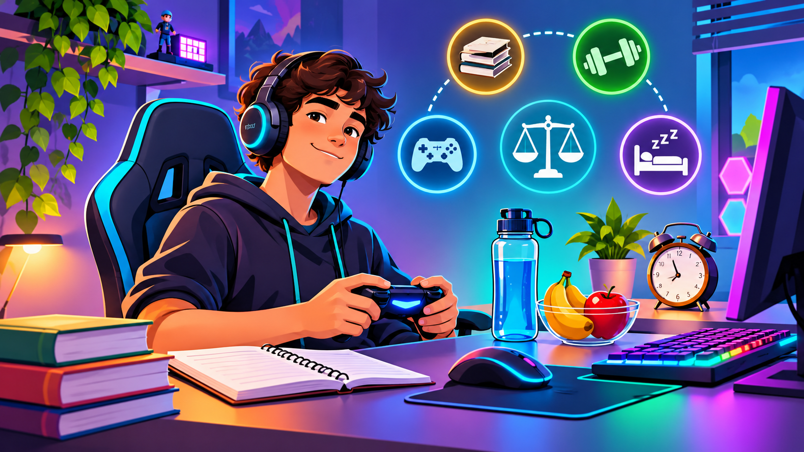
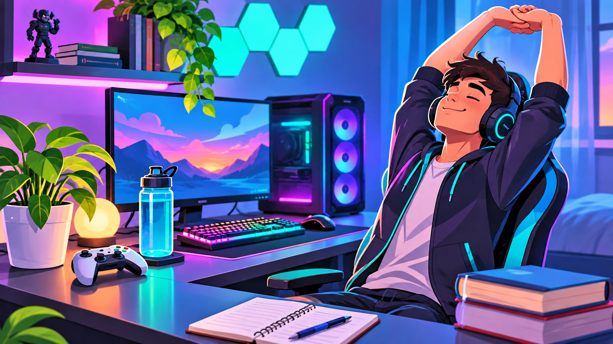
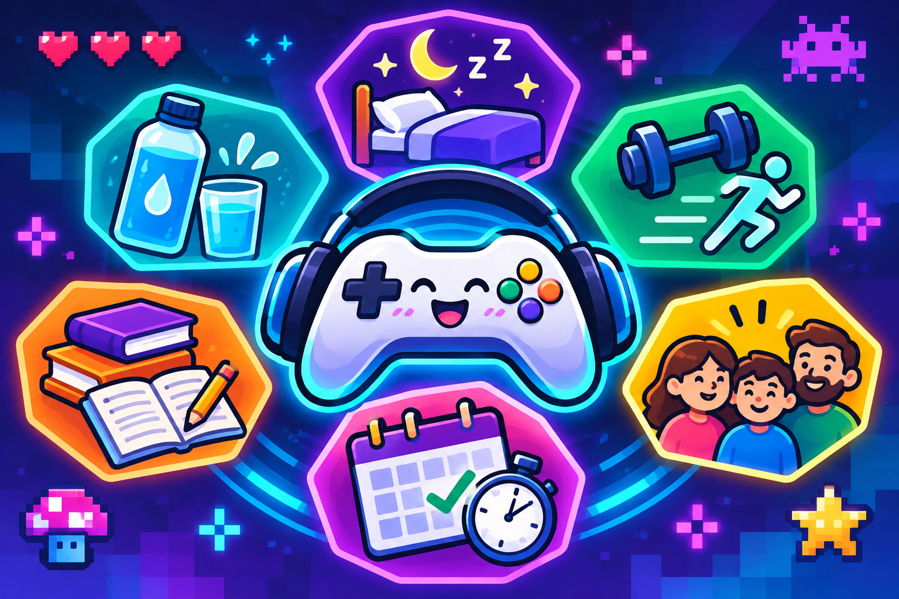

Organiza tu tiempo
Crea un horario para jugar y cumplir con tus estudios y responsabilidades.
Juega, Disfruta y Mantén un Balance
Los videojuegos son una forma divertida de entretenernos, aprender y compartir con amigos. Pero también es importante mantener un balance entre jugar, estudiar, descansar y disfrutar otras actividades.

Imagen creada con inteligencia artificial.
Nuestro propósito es ayudar a los jóvenes a desarrollar hábitos saludables mientras disfrutan de sus videojuegos favoritos.
Aprende másCrea un horario para jugar y cumplir con tus estudios y responsabilidades.
Levántate, estírate y descansa entre tus partidas.
Recuerda dormir bien, tomar agua y mantenerte físicamente activo.
Comparte con tu familia y amigos, estudia y disfruta otras actividades.
Pasar mucho tiempo frente a una pantalla puede causar cansancio. Recuerda levantarte, moverte y descansar durante tus sesiones de videojuegos.

Imagen creada con inteligencia artificial.
¿Quieres mejorar tus hábitos? Participa en nuestro reto y aprende a organizar mejor tu tiempo de juego.

Imagen creada con inteligencia artificial.
El reto consiste en seleccionar hábitos saludables que puedas practicar todos los días mientras disfrutas tus juegos.
Participa en el reto